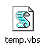
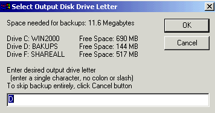
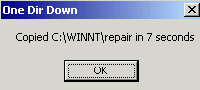

| Home => Backup Script |
| Topics on this page: What This Script Does, Configuration Variables, Input, Output, Profiles, Get the Script, Requirements, Running the Script, Bells and Whistles, Pros and Cons, WSH Security, After the Backup, Sample Log File, Problems and Revision History |
This script (a type of computer program) backs up directories (a.k.a. folders). Why did I write a script to do something so trivial? I needed it for myself. On my main computer, I was backing up a multitude of folders with Windows explorer. This was error prone (I might forget to backup a directory) and time consuming. I copied one directory, waited for it to complete, then copied another. Often the directories took a long time to back-up which meant twiddling my thumbs at my computer. Then there was the other computer where I wasn't backing up anything . . .
Backups have to be easy to do, or most people won't do them. With this in mind, my goal with this script was to make it as easy to run as possible. Towards that end, it can be configured for one click backup. That is, you can set up an icon on your Windows desktop for this script, click on the icon to run the script and that's it. It will do everything from soup to nuts without asking any questions or posing any prompts. There are other ways to run the script, and it can provide much information if you so desire, but my goal was the easiest possible backup to run. When I'm in the middle of doing something else and need to make backups, the last thing I wanted to have to do was think about the backups.
The tradeoff is that it may entail some waste (backup some files that don't really need to be backed up) and there are fewer backup options compared to many other backup programs. For example, this script only backs up entire directories. It does not back up individual files. If you need to back up some files in a directory but not others, this is not the product for you. On the other hand, it can back up any number of directories.
Almost everyone needs to backup files from multiple directories. You fall into this category if you don't keep every important file in the My Documents folder. It should be especially useful to people who need to back up different directories on different computers. Copy the script to each computer and customize it as needed.
Even if you are brutally organized, and keep all your files in a single directory, you may still want to backup files in multiple directories. For example, you might want copies of your E-mail and web browser Favorites/Bookmarks. AOL users might want to backup the AOL download directory. If you use the Outlook calendar, you may want a copy of the file holding your schedule. Windows 2000 users might want to back up the WINNT/Repair directory.
This script is most useful in cases where you are backing up files to a location that is large enough to store multiple copies of them. For example, if you were backing up 200 KB of files, you could fit 6 copies of your files on a single floppy disk. If you back up your files to media that can only hold one or two copies, then this script may not be your best option.
The script is written in VBScript and intended to be run under Windows Scripting Host (WSH). For more on WSH, see the Get The Script section below.
You control the action of the script by modifying configuration variables (a.k.a. controlling parameters) in the script. Like all scripts, this one is distributed as source code and can be edited with Notepad. Below is a sample of these variables. The rest of this document describes the meaning of each of these variables in detail.
'**************************************************************
' Configuration Variables
'**************************************************************
OutputDrive = "D"
'Output Drive letter
dim sourcefolders(1)
'Define a list of 2 directories to be
copied
sourcefolders(0) = "F:\FamilyPix"
'Back up this directory
sourcefolders(1) = "C:\WINNT\repair" 'Back up
this directory
AutoOpMode = "no"
'Auto operations mode? Use "yes" or "no"
MinBkupsToKeep = 3
'Minimum number of backup generations to keep
MinDaysToKeep = 8
'Minimum number of days to keep every backup generation
OutputFilePrefix = "MikeBkup" 'File name prefix
LogComment = "Look ma, no hands!" 'A comment that is written to the log file
SystemLogging = "no"
'Enable system logging? "yes" or "no"
As noted above, the script backs up all files in a list of directories. It can back up any number of directories and the directories can reside on any drive letter available on your computer. Each directory to be backed up has to be specified as a member of the sourcefolders array (an array in this context refers to a list of similar things). You do this by modifying the source code of the script as follows:
dim sourcefolders(2) 'Declare an array
with three elements, the folders to backup
sourcefolders(0) = "C:\My Documents"
sourcefolders(1) = "C:\WINNT\repair"
sourcefolders(2) = "F:\anydirectory\subdirx"
The sample above backs up three directories. The gotcha here is that when declaring or defining an array ("dim" in VBScript) the number of elements is one more than the number in the array declaration. This is because VBScript arrays start with element zero. In this example, the sourcefolders array is declared (the dim statement) to contain 2 elements, which Microsoft has decreed really means three.
The script can reside in any directory on your computer. However, I advise against using the script to back up the directory that the script resides in. In general, not just with this script, backing up files that are in-use at the time they are backed up is a bad thing.
The backups are normal files, that is, they are not created in a proprietary data format. It is as if you copied them with Windows Explorer. Restoring the backups is as simple as could be, just copy the desired files as you would copy any files. The script is not needed for restores.
All files in the source directories are copied (this is typically referred to as a full backup).
The output drive letter is specified in a configuration variable called OutputDrive
as follows:
OutputDrive = "F"
'Drive Letter where output
backups go
This causes the backups to be written to the F disk. In auto-operations mode (explained more below) this setting is used unconditionally. In manual mode, the user gets a chance to change the output drive letter at run time.
All the backups created in a single execution of the script reside in a
single backup
directory. The backed-up directories end up as sub-directories of this
main output directory (explained in the next paragraph). The main backup directory is created in the root directory of the
output disk drive (F in the example above). The
directory name will look something like:
F:\MikeBkup_Full_mmmdd.yyyy_hh.mm
For example, a backup that starts on January 24, 2002 at 1:22 PM will
create a backup folder called:
F:\MikeBkup_Full_Jan24.2002_13.22
The hour and minute in the file name will always be two digits.
As noted above, the directories backed up in a single execution of the script, end up as sub-directories of the main output directory. The input directory name is slightly transformed. To illustrate how, the directories specified above would cause the following to be created in the main output directory:
| INPUT | OUTPUT |
|---|---|
| C:\My Documents | F:\MikeBkup_Full_mmmdd.yyyy_hh.mm\My Documents |
| C:\WINNT\repair | F:\MikeBkup_Full_mmmdd.yyyy_hh.mm\WINNT__repair |
| F:\anydirectory\subdirx | F:\MikeBkup_Full_mmmdd.yyyy_hh.mm\anydirectory__subdirx |
The back slashes in the input directory names are changed to double underscores. This was done for two reasons. One was a technical issue with creating new folders from VBScript that I won't bore you with. The other reason was to make it very simple, clear and obvious which directories were backed up. Had I preserved the exact directory structure (for example by creating a repair directory under the WINNT directory) then it would not have been immediately obvious which sub-directories of the WINNT directory were backed up. The "My Documents" folder name was not changed at all because it was not a subfolder, that is, there were no backslashes in the name.
Note that the source drive letter is not reflected in the output directory name. I didn't think it was all that important since the full name is documented in the log file, but I might add this at some time in the future.
The script also creates a plain text log file of its activities. A sample of the log file is shown elsewhere on this page. Two copies of the log file are created. One copy goes to the same directory where the script is run from. If you isolate the script in its own directory, this provides a neat grouping of the script and all the logs of its activities. Old log files are not deleted. The other copy goes to the main output directory.
Backups can only be written to devices that appear to Windows as a drive letter. If Windows Explorer can copy files to it, this script can write to it. Since writing to CD-Rs involves special software, the script can't write to them. It can write to USB based keychain flash storage devices and USB based external hard disks.
Typically a backup program will let you define multiple backup profiles and handle them all. This script does not, it can only deal with a single backup profile. That is, you can only define one set of files/directories to back up and can only define one set of options/parameters to use with those files (more on this in the next topic).
To implement multiple backup profiles, make multiple copies of the script. Name each copy appropriately and be sure that each copy of the script specifies a different value for the Output File Prefix.
The configuration variable, OutputFilePrefix, controls the file name prefix that is used when creating the log file and the main output directory. The default value is "MikeBkup" and this is what's used in examples on this page. Someone named Harvey can have their backups labeled HarveysBkups. This would result in a backup directory being created with a name like F:HarveysBkup_Full_mmmdd.yyyy_hh.mm.
If Bill and Ted share a computer and want to have an excellent backup adventure, Bill can customize his copy of the script with the directories he wants to copy and an output file prefix of BillsBackups. Ted can customize a different copy of the script with his directories and an output file prefix of TedsBackups. Both Bill and Ted can run the backup script whenever they chose and keep as many copies of their backups as they like. Each set of backups is separate and independent due to the different output file prefixes.
Backup profiles can also be used to back up directories at different times. For example, one set of directories can be backed up daily with one rule (number of generations and/or days) for how many backups to keep. Another set of directories, specified in a separate copy of the script, can be backed up monthly with a different rule for how many backups to keep. As long as each set of directories uses a different OutputFilePrefix, they are separate and independent.
For example, suppose user Mo wanted to backup some files daily, user Larry wanted to backup other files weekly and user Curly wanted to backup still other files on a monthly basis. To accomplish this, set up three copies of the script as shown below. Again, it is suggested that all copies of the script reside in a single dedicated directory.
| Script File Name | Value of OutputFilePrefix |
| MoDaily.vbs | MoDailyBkup |
| LarryWeekly.vbs | LarryWeeklyBkup |
| CurlyMonthly.vbs | CurlyMonthlyBkup |
The output file prefix can be any character string, but I suggest that "backup" or "bkup" be included for the sake of clarity.
Like any script, this backup script is distributed as source code. WSH scripts have a file type of VBS. However, this script is distributed as a plain text file (.TXT) rather than as a VBS file for two reasons. First, anti-virus programs are on the lookout for VBS files because they can contain viruses. Second, you have to modify the source code anyway before it can be of any use to you.
To view the script as a plain text file in a new window click here. Save it on your computer with File->SaveAs in your web browser. Then edit the configuration variables and changed the file type to ".VBS").
Running the script requires Windows Scripting Host (WSH) version 2.0 or later. WSH is a component of Windows (it is the replacement for BAT files) that allows you to run scripts written in VBScript and JavaScript. WSH is included in Windows 98, ME, 2000 and XP. It was not included in Windows 95 and NT4 but users of those operating systems can download it, for free, from Microsoft.
As of January 2002, the latest version of WSH is v5.6. The script was developed under version 5.6, but according to the Microsoft documentation, should run on versions as old as 2.0, which is pretty darn old. IE4 and Outlook 98 supported WSH version 3.0. The first version of IE5 supported WSH version 5.0. Windows 2000 comes with WSH version 5.1 (and updating it to SP3 does not update the WSH version). Windows XP comes with WSH version 5.6.
As noted above, the script can run from any directory on your computer. However, I suggest keeping it a dedicated directory for two reasons. One, it avoids the issue of backing up the directory where the script resides. One copy of the log file is written to the directory that the script is running from. Isolating the script, also isolates these log files.
If this is your first encounter with Windows Scripting Host, there are a number of ways to test if WSH is installed on your computer, and if it is, which version.
|
Perhaps the simplest way is create a file with a file type of VBS (for this purpose, the file can be anything at all). Then view the file in Windows Explorer, using the large icons view. The icon shown here on the right indicates that it is installed. |
You can also run the script shown below to see what version of WSH is installed on your computer. It displays a pop-up window similar to one shown here at the right. Copy the script source code below into Notepad. Save the file with a name of your choosing and a file type of "vbs". The file should have three lines, it is not case sensitive. Run the script by double clicking on the file name from Windows Explorer. If Windows does not know what to do with VBS files, WSH is not installed.
|
 |
When you run the script, the log file (below) includes a display of the version of WSH on your computer.
As with all backups, you should shut down any applications for which you are backing up their data. For example, if you are backing up your email messages, then shut down your email program. Specifically, this script will fail if you try to back up Outlook’s data files while Outlook is running.
The script runs in one of two modes: manual or Auto-Operations. Manual mode is intended for when you want to run the script yourself, that is, you manually invoke it. Auto-Operations mode is intended for use with scheduled backups where there is no human being sitting at the computer. This is backups taken in the middle of the night, typically over a network.
The mode is determined by the AutoOpMode configuration variable. It should be set to either "yes" or "no" (it is case sensitive). "yes" means Auto-Operations mode, "no" means manual mode.
The cheat sheet below illustrates the differences between manual mode and auto-operations mode. In Auto-Operations mode, the script asks the user no questions and displays no status messages while it is running. The automatic deletion of old backups only occurs in Auto-Operations mode.
| Action | Manual Mode AutoOpMode="no" |
Auto-Operations Mode AutoOpMode="yes" |
| Before the backup starts, the user is shown the available space and the required space and asked whether to continue with the backup | Yes | No |
| After each directory is backed up an information message is displayed | Yes | No |
| After the backup is complete, old backups are evaluated for possible automatic deletion | No | Yes |
| After the script is complete, Notepad is run to show the user the contents of the log file | Yes | No |
Gotcha: One not-so-obvious implication of the AutoOpMode variable is that you can manually run the script with this variable set to "yes" to enable Auto-Ops mode. This is fine. Likewise, you can run the script via a job scheduler and mistakenly have AutoOpMode set to "no". This would be a problem as the script will pause (see below) waiting for confirmation of the output drive letter. |
Running Manually
The simplest way to manually run a WSH script with a file type of VBS, is just double click on it in Windows Explorer. WSH scripts can also be run from a command prompt or you can create a shortcut on the desktop for the script in the usual way (right click on the file in Windows Explorer and select Create Shortcut).
In manual mode, the user sees a number of prompts as described below.
| First,
the script calculates the total size of all directories that are
being backed up and the amount of free space on all available disk
drives. All this is displayed to the user (see right) who can chose the
output disk drive letter. The default drive letter is taken from the OutputDrive
variable. By clicking on the Cancel button, the user can bypass the
backup process altogether.
If there is floppy disk in the computer, the A drive will appear in this prompt. It's unlikely however to have enough free space. Likewise, if there is a CD in the CD-ROM drive, its drive letter will also appear in this list with a free space value of "N/A". Due to cluster waste it is possible that a backup may not fit on disk drive that seems to have enough room. For more on this see the topic below on wasted space. If, at run time, there is not enough space on the output drive letter, the
script fails. It does not check before starting the backup whether there is
sufficient space on the output drive. |
 After each directory is backed up, a pop-up message is briefly displayed on the screen (see left) with the name of the directory and the time taken to back it up. There is no need to click the OK button, the window will close itself after three seconds. |
When this script finishes, the user is put into Notepad to view the log file. In manual mode, there is no automatic deletion of old backups. The log file shows all the existing backups and their fate is left to the user.
Running Automatically via a Scheduler
Like any windows program, the script can be invoked by an automated scheduler program. Unlike most WSH scripts, there are no input parameters to worry about. All configuration options are specified by editing the source code of the script.
|
If you use Norton Anti-Virus 2001, 2002 or 2003 with script blocking enabled (and possibly other anti-virus programs), the first time you run this script, NAV will popup an alert window like the one show here from Norton Anti-Virus 2003. The script does a handful of things, such as creating the log file, that Norton Anti-Virus does not like . If you select "authorize this script" from the Action drop down box, you will be able to run the script repeatedly with no additional alerts from NAV, at least until the script is changed in any way (even if only comments are changed). |
Many flavors of Windows include a scheduling application. The following are instructions for scheduling this script using the scheduler in Windows 2000.
First insure that the Task Scheduler service is running. Most likely you will want to set this service to run automatically at boot time (Control Panel -> Administrative Tools -> Services). Run the scheduler using the Scheduled Tasks application in the Control Panel. Double click on the option to add a scheduled task. Click on the Next button, then the Browse button. Navigate to the .VBS file that you want to schedule. Give a name to the scheduled task, select a schedule and a time (you can change these later), enter a username and password. After the script is scheduled, you can double click on the scheduled event to bring up more advanced scheduling options. As noted above, the first time the script is run (either by the scheduler or by you) NAV will complain.
Be careful about the password when scheduling the script. If it is wrong, at least on my computer, there were no errors or warnings, the script just did not run. Nothing was logged to any of the three system logs.
There is an option for scheduled events in Windows 2000 to "Wake the computer to run this task". I tried this with my computer sleeping (called Stand by mode in Windows 2000). The machine woke up and the scheduled backup ran. Cool. The screen remained black, but status lights indicated that it came out of sleep mode and that disk I/O was performed. I then tried it with the computer turned off. It stayed off.
Norton Anti-Virus also has a scheduler, I have not used it to schedule backups.
This section describes the other configuration variables and additional concepts and messages used by the script.
Automatic deletion of old backups: To prevent backups created in Auto-Operations mode from growing forever, the script can automatically delete old backups based on both the age of the backup and the number of existing generations of backup. For an old backup to be automatically deleted:
The X above is controlled by configuration variable MinBkupsToKeep which determines the minimum number of backup generations to keep. If you set this to 4, for example, the backup script will not consider deleting old backups until there five or more backups. Whether the fifth or later generation of backup will be deleted, depends on the next variable.
The Y above is controlled by configuration variable MinDaysToKeep that determines the minimum age of kept backups. For example, if you set this to 20, the backup script will never delete an old backup that is less than or equal to 20 days old. Backups older than 20 days may be deleted based on the value of MinBkupsToKeep. Note that if you specify zero for MinDaysToKeep the script will not delete old generations created on the same day the script is run. A backup made today is considered zero days old and this field specifies the minimum age, in days, of backups that are to be kept.| Note: If you would like to change the way this works, look at the source code for the section " Delete old backup generations". Change the greater than test in "IF age4 > MinDaysToKeep" to greater than or equal (>=) |
Both these settings are minimum values, there are no maximum limits. They were implemented to insure that a reasonable number of backups are constantly available. However, since backup generations that are over both minimum limits are deleted, these parameters also function to limit the amount of stored backups.
The determination of which, if any, old backups are deleted by the script is based on satisfying all the above criteria. To illustrate this interaction between MinBkupsToKeep and MinDaysToKeep consider the following configurations:
| AutoOpMode
= "yes" MinBkupsToKeep = 4 MinDaysToKeep = 2 |
If this backup script is run daily, this results in four generations of the backup being kept, the oldest of which is 4 days old. If the script is run weekly, this results in four generations being kept, the oldest of which is 4 weeks old. |
| AutoOpMode
= "yes" MinBkupsToKeep = 4 MinDaysToKeep = 20 |
If this backup script is run daily, this results in twenty generations of the backup being kept, the oldest of which is 19 days old. If the script is run weekly, this results in four generations being kept, the oldest of which is 3 weeks old. |
| AutoOpMode
= "yes" MinBkupsToKeep = 4 MinDaysToKeep = 31 |
If this backup script is run daily, this results in thirty one generations of the backup being kept, the oldest of which is 30 days old. If the script is run weekly, this results in five generations being kept, the oldest of which is 28 days old. |
Copy Speed: After a folder has been copied, the total elapsed seconds for the copy is calculated and externalized in the log file. If the copy took at least 4 seconds, then the speed of the copy operation is calculated. Small directories are ignored on purpose because the sample size is too small to produce useful speed numbers. The speed of the backup is shown as both bytes/second and MegaBits/second. The first number is useful as a point of comparison when backing up from and to a local hard disk. The second number is useful when backing up a computer on your LAN. Are you really getting the 10 MegaBits/second the LAN was advertised as being capable of? Probably not. Both these rates are externalized in the log file.
System Logging: The concept of an Operating System log is usually only associated with Windows NT/2000/XP. However, WSH provides system logging capability under Windows 9x/Me also. Under Windows NT/2000/XP, WSH writes to the application log (as opposed to the system or security logs). It can be viewed with the Event Viewer (in Windows 2000: Control Panel -> Administrative Tools -> Event Viewer). Under Windows 9x/Me, events are logged to file wsh.log in the Windows directory.
As of version 2.8, the script can write messages to the system log. Should system logging cause a problem, the configuration variable SystemLogging can be used to turn it off. A value "no" disables it, anything else enables it. It is highly suggested that a value of "yes" be used to enable it. As of version 2.9, the default is "no". This is because Windows 98SE, with its default of WSH v5.0, does not support system logging. Also, under Windows 9x system logging can fail if the wsh.log file is locked.
At the start of script it logs all the configuration variables and the script name and source. At the end it simply logs the fact that it ended. If there is no end of script message, it died mid-stream. Eventually I might use the system logging feature to log errors, especially those involving creating the normal text file log. You can use the log data as input for a reporting system based on the system logs.
Under Windows 2000, when the script is run manually (both in manual mode and auto-operations mode), the log file will show a source of "WSH", a category of "none", a user of "N/A" and an event of 4, which simply means the message is informational. I haven't yet tried system logging when running the script from the Windows scheduler.
You could, of course, use a dedicated backup program instead of this script. For many people, this will be the right decision. This script however has some advantages.
Then again, there are dis-advantages of the script
WSH has been associated with viruses causing some people security concerns. Norton Anti-Virus 2001 and 2002 protect you against WSH scripts. From personal experience, I can say that NAV 2001 is particularly good at catching the execution of scripts. If the script blocking feature is enabled, and it should be by default, it pops up a window before a script runs. There are options to prevent the script from running, to let it run once and only once, and to authorize it to run all the time. The full authorization is lost if any changes at all are made to the script.
For anyone not using NAV 2001 or 2002, there are options to partially disable WSH. In Windows 95 and 98 you can rename the main WSH executables (wscript.exe and cscript.exe) to prevent scripts from being run automatically. Desired scripts can be run by executing the renamed executables directly. In Windows 2000 you need to make extensive registry changes to do the same thing. I don't know about Windows XP.
Symantec has an item on their web site called How to disable or remove the Windows Scripting Host that provides more background on this and offers a free program to enable and disable WSH.
I know of two programs that can be used to to run the backup script and then shut down the computer.
A free program called Timed Shutdown can shut down your computer at a specific time. If your backups take 30 minutes, set Timed Shutdown to turn off your computer in 45 minutes. I have not used this program and did not write it. It is for Windows 9x and 2000.
Another free program, Karen Kenworthy's Show Stopper can be used to manually invoke a shutdown of your computer. It intercepts the shutdown and runs one or more programs, before letting the shutdown continue. Backup and Defrag before powering off! You can read about the program in her newsletter of March 11, 2003. I have not used Show Stopper but I have used enough of Karen's programs to vouch for her as an excellent source of good, free software.
Windows XP users can schedule their computer to shut down by using the Windows scheduler to run program shutdown.exe. This is not available in older versions of Windows.
The format of the log file name is MikeBkup_Log_mmmdd.yyyy_hh.mm.txt. For example, a log file created on January 26, 2002 at 1:22 PM would be called MikeBkup_Log_Jan26.2002_13.22.txt. The hour and minute will always be two digits. A copy of the log is written to the directory the script is running out of. An additional copy is written to the backup directory.
| *** Mike's backup script started at:
1/26/2002 12:32:17 PM *** Script: MikeBkup.vbs Version 2.11 Environment: OS: Windows_NT Computer: NEWDELL User: Linda WSH version: 5.6 Running from: C:\somedir\MikeBkup.vbs by Windows Script Host Comment: Look Ma, no hands! Controlling parameters: AutoOpMode=yes MinBkupsToKeep=2 MinDaysToKeep=2 OutputFilePrefix=MikeBkup OutputDrive=F SystemLogging=no Output drive: F SHAREALL(Fixed) FAT32 Total Size: 1,621 Megabytes Free Space: 660.7 Megabytes Input Folders to be copied: F:\Mystuff\ToRead 4.1 Megabytes C:\WINNT\repair 7.5 Megabytes Total size of input folders 11.6 Megabytes Created output folder F:\MikeBkup_Full_Jan24.2002_12.32 Copy starting... Start F:\Mystuff\ToRead 1/24/2002 12:32:57 PM 4,280,940 bytes End F:\Mystuff\ToRead 1/24/2002 12:33:01 PM 4 seconds to copy Speed of copy: 1,070,235 bytes/second 8.2 MegaBits/second Start C:\WINNT\repair 1/24/2002 12:33:04 PM 7,839,182 bytes End C:\WINNT\repair 1/24/2002 12:33:10 PM 6 seconds to copy Speed of copy: 1,306,530 bytes/second 10.0 MegaBits/second Copy completed. Output Drive Freespace: Before 660.7 After: 648.0 Backups that should have used 11.6 Megabytes, actually used 12.6 Megabytes Searching for existing backup folders . . . looking in root of F disk for directories starting with MikeBkup F:\MikeBkup_Full_Jan24.2002_15.46 (11.6 Meg) 1/24/2002 3:46:16 PM F:\MikeBkup_Full_Jan23.2002_20.16 (11.6 Meg) 1/23/2002 8:16:53 PM F:\MikeBkup_Full_Jan25.2002_19.22 (11.6 Meg) 1/25/2002 7:22:42 PM Search completed Examining old backups for possible deletion... Deleting F:\MikeBkup_Full_Jan23.2002_20.16 It is 3 days old. Limit is 2 days Examination complete, 1 backup generations deleted. *** Mike's backup script ended at: 1/26/2002 12:33:13 PM *** |
 May 28, 2005.
If the total length of all the sub-directories gets too long the script fails
with an error code of 800A004C.
I'm not sure the longest length that Windows and/or WSH can handle. I have to
test for a long name as it's being created and take some remedial action to
shorten it. Perhaps just use single letters for sub-sub-sub directory names.
May 28, 2005.
If the total length of all the sub-directories gets too long the script fails
with an error code of 800A004C.
I'm not sure the longest length that Windows and/or WSH can handle. I have to
test for a long name as it's being created and take some remedial action to
shorten it. Perhaps just use single letters for sub-sub-sub directory names.
 The error
handling is non-existent. I need to modify the part of the script that actually
does the directory copy to ignore errors during the copy. This way I can
externalize an error message and copy any other later directories.
The error
handling is non-existent. I need to modify the part of the script that actually
does the directory copy to ignore errors during the copy. This way I can
externalize an error message and copy any other later directories.
 May 5, 2005. A user wrote asking for the ability to direct the output to a
specific folder. Currently you can only direct your backups to, for
example, the F disk (as in F:\). You can not direct them to a specific folder on
the F disk (as in F:\MyBackups). I had been meaning to add this feature for a
while. If you want this feature, I am pretty sure the below source code
changes will work, but I have not yet been able to test it.
May 5, 2005. A user wrote asking for the ability to direct the output to a
specific folder. Currently you can only direct your backups to, for
example, the F disk (as in F:\). You can not direct them to a specific folder on
the F disk (as in F:\MyBackups). I had been meaning to add this feature for a
while. If you want this feature, I am pretty sure the below source code
changes will work, but I have not yet been able to test it.
In the section of code labeled "To Copy or Not To Copy" there is a
line
outfoldername = OutputDrive & ":\" & OutputFilePrefix & "_Full" & filenamedate
If you change this to
outfoldername = OutputDrive & ":\MyBackups\" & OutputFilePrefix & "_Full" & filenamedate
then the script should write the backups to the MyBackups folder rather than to the root
of the disk drive. If anyone tries it, let me know how it goes. One advantage of
this is that when the backups are stored on an NTFS partition you can compress
the backups without compressing other folders.
Update:
May 12, 2005. A user of the script was nice enough to let me know that the above
change does work. However, there is a missing piece - the script still looks in
the root directory of the output disk drive for old backups to delete. I'll get
to this....
One user of the script could run it manually without a problem, but had the exact same script fail when run by the Windows 2000 scheduler. The scheduled version of the script even ran with the same userid as the manually run version. The problem was with the output drive, a shared directory on his LAN that was mapped to a drive letter. This should work. Upgrading WSH to version 5.6 solved the problem. See Making a Script Work as a Scheduled Task from Windows Scripting Solutions June 2001.
Another user has a different problem with the Windows 2000 scheduler. Her backup scripts stop working each time the machine changed to or from daylight savings time. I have no idea why.
FYI: An article about making backups by Lincoln Spector in the February 2002 issue of PC World magazine
FYI: This script was featured in the August 26, 2002 issue of the Langa List newsletter. Fred Langa has a free and paid version of his newsletter. The paid version (referred to as "plus") is longer than the free (standard) edition. This script was one of the extras that readers of the paid version got to learn about.
| michael @ michaelhorowitz.com | Home => Backup Script Top of Page |
Viewed
 times since May 26, 2005
times since May 26, 2005 |
Last Updated: May 28, 2005 |

 Anti-virus Gotcha
Anti-virus Gotcha